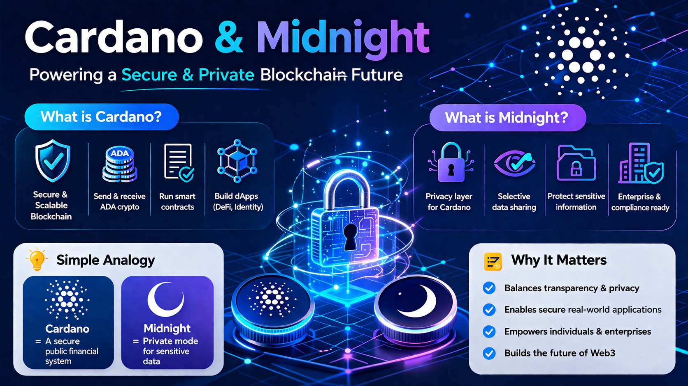

Cardano es una plataforma blockchain diseñada para ejecutar aplicaciones seguras y escalables como pagos, contratos inteligentes y aplicaciones descentralizadas (dApps).
Utiliza un sistema de prueba de participación (proof-of-stake), lo que lo hace más eficiente energéticamente. Permite enviar ADA, ejecutar contratos inteligentes y construir aplicaciones.
• Enviar y recibir ADA
• Ejecutar contratos inteligentes
• Crear aplicaciones descentralizadas (DeFi, identidad digital, etc.)
Midnight es un proyecto blockchain enfocado en la privacidad dentro del ecosistema Cardano. Permite construir aplicaciones donde algunos datos son públicos y otros privados.
• Protección de datos sensibles
• Divulgación selectiva de información
• Cumplimiento para empresas y regulaciones
Cardano proporciona la base blockchain, mientras que Midnight añade privacidad. Juntos buscan equilibrar transparencia y confidencialidad.